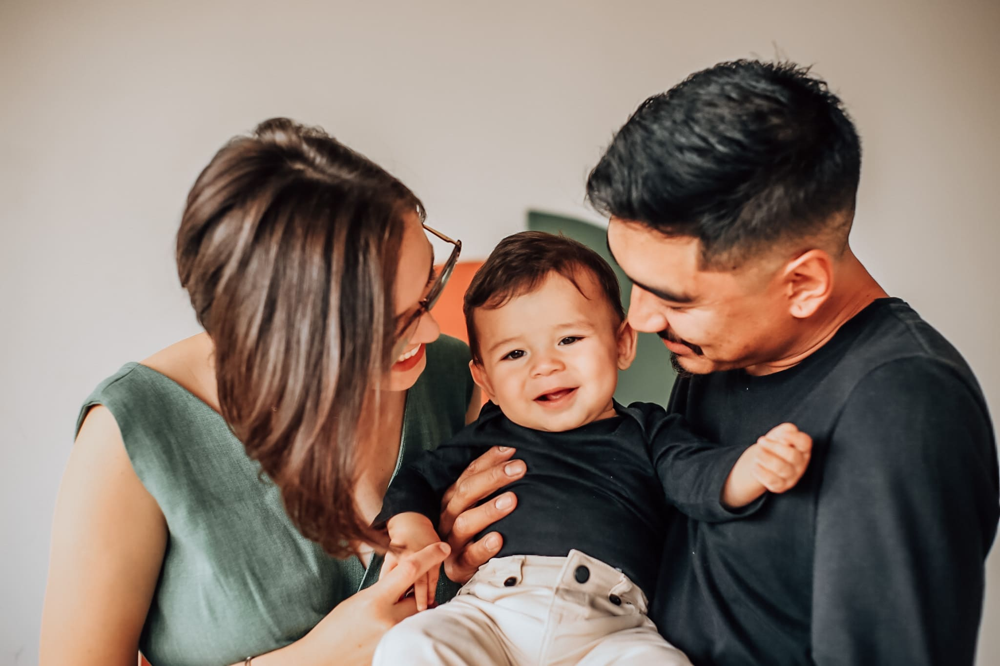
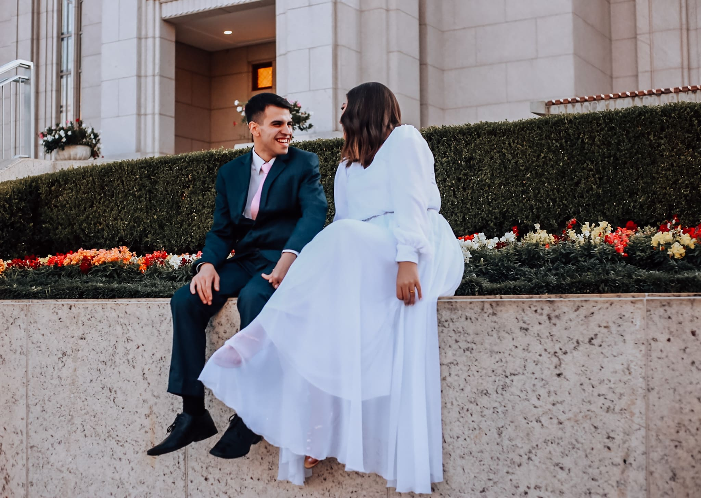
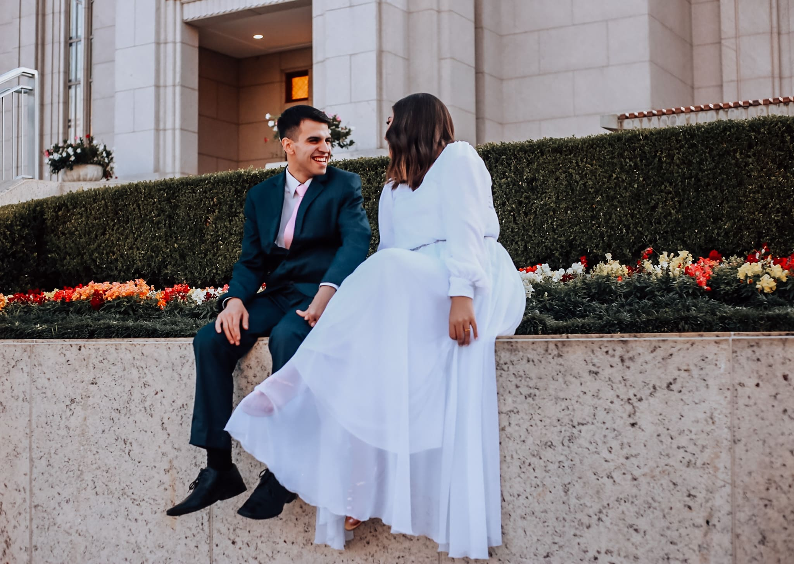

Meet my two favorite photo shooting...
Little James

Thifany
& Robert

Little James
Let me introduce you Little James and his parents. Foremost, this beautiful baby loves taking pictures and his amazing parents. Debora is his mom, Alisson his dad. I've been blessed to spend an afternoon talking and hearing from this family. Little James even being hungry through the shoot section showed his kind smile for us several times. How I love being close to a so special family!



Debora and Alisson:
"We can tell you all how professional and human Nubia
was during this section of pictures. She has great
tactics and natural skills of calling the attention of
our baby which made us impressed and happy. We were
afraid of Little James being scared or shy, but this did
not happen. I feel I have another friend, not just a
photographer to take our pictures."
Babies are my passion. My little Oliver brings light to my life, and so do Little James with these pictures!


Thifany & Robert
Marriages for sure delight me in a way I can't express myself with words. Thifany and Robert are so original and they chose a special spot for post-wedding pictures. They told me how incredible was to get married inside this temple of their religion, we spent some time talking about life and how we are grateful for living. They showed me with those pictures the gratitude they got in life.


Robert:
"I gave as a gift to Thifany this picture shooting. I
know how she loves recording moments. I didn't know how
this gift could be maximized by the work and kindness of
Nubia. She brought her baby and husband with her. They
were the most impressive team workers. Even Oliver
helped to allow the environment to be more soft and
natural."
Life is beautiful and impressive. Let all these moments be recorded for you and the ones you love!

 
